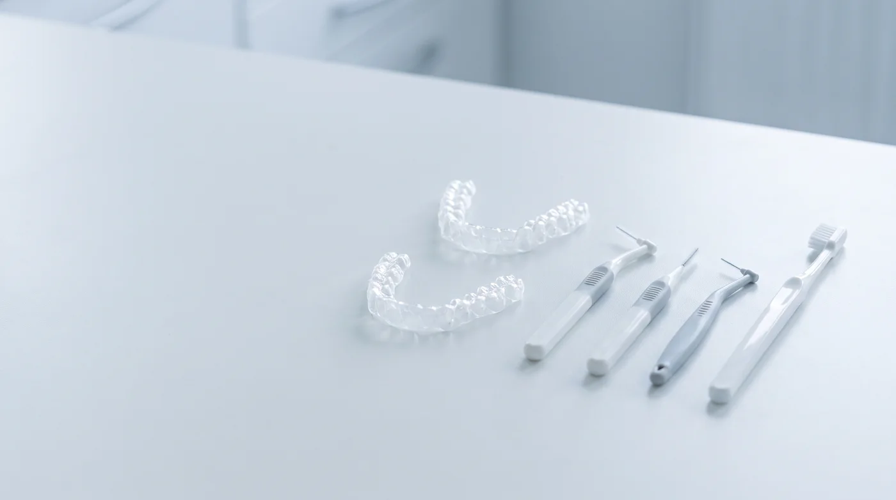

Материал для специалистов
Статья написана для гигиенистов. Тактика ортодонтического лечения и решения по аппаратуре — компетенция лечащего врача-ортодонта.
Почему аппаратура меняет всё
Несъёмная конструкция превращает гладкую поверхность зуба в сложный рельеф с множеством ретенционных зон. Одновременно происходят три вещи:
- Механическая недоступность. Щётка физически не проходит под дугу и в углы вокруг основания замка.
- Смена микрофлоры. В условиях длительного удержания биоплёнки состав сообщества сдвигается в сторону кислотопродуцирующих видов.
- Падение мотивации. Чистить стало дольше и неудобнее, а результат визуально хуже — часть пациентов постепенно снижает усилия.
Результат предсказуем: деминерализация вокруг замков и гингивит.

Зоны риска по убыванию
| Зона | Риск | Чем работать |
|---|---|---|
| Периметр основания замка | Высокий | Мелкая фракция, монопучковая щётка дома |
| Участок под дугой | Высокий | Мелкая фракция, суперфлосс дома |
| Пришеечная область | Высокий | Мелкая фракция, острый угол |
| Межзубные промежутки | Средний | Ёршики подобранного размера |
| Несъёмный ретейнер с язычной стороны | Высокий | Мелкая фракция, ирригатор дома |
| Композитные аттачменты при элайнерах | Средний | Мелкая фракция, крупная повреждает край |
Чего не должен делать абразив
Крупная содовая фракция вокруг брекета работает против цели: она способна нарушить краевое прилегание адгезива и повредить поверхность композитных аттачментов. В ортодонтической зоне применяется только мелкодисперсный порошок на основе эритритола.
Протокол приёма
- Осмотр на предмет деминерализации. Меловидные пятна по периметру замков — сигнал сократить интервал и пересмотреть домашний уход, а не косметическая мелочь.
- Окрашивание. При аппаратуре особенно наглядно: пациент видит, что чистит только видимые поверхности.
- Мотивационная часть. Подбор монопучковой щётки, ёршиков по размеру промежутков, суперфлосса, ирригатора. Показать технику на модели.
- Воздушно-абразивная обработка мелкой фракцией: периметр замков, под дугой, пришеечная зона, межзубные промежутки.
- Ультразвук точечно по минерализованным отложениям, аккуратно относительно аппаратуры.
- Реминерализация. Фторсодержащий состав — обязательный этап при ортодонтическом лечении, а не опция.
- Назначение интервала и фиксация показателей. Логика интервалов — в статье о recall-системе.
Элайнеры и ретейнеры
Элайнеры кажутся более простым случаем — их снимают. Но каппа плотно прилегает к зубу и удерживает у поверхности и налёт, и остатки напитков, если пациент пьёт не снимая. Отдельная зона — композитные аттачменты: их края работают как ретенционные пункты, а крупный абразив нарушает полировку.
Несъёмный ретейнер после лечения — долгосрочный фактор риска. Проволока с язычной стороны нижних резцов затрудняет и щётку, и флосс, а стоит там годами. Пациенты с ретейнером должны оставаться в системе поддерживающих визитов, даже если ортодонтическое лечение давно закончено.

Домашний уход: что реально назначать
Общая рекомендация «чистить тщательнее» при аппаратуре не работает. Назначение должно быть предметным.
- Монопучковая щётка — для периметра замков. Самое недооценённое средство при брекетах.
- Ёршики — с подбором размера под конкретные промежутки, а не «купите ёршики».
- Суперфлосс — для участков под дугой.
- Ирригатор — как дополнение, особенно при несъёмном ретейнере.
- Фторсодержащая паста и, по назначению врача, средства с повышенным содержанием фторида.
- Сокращение частоты перекусов — при аппаратуре каждая кислотная атака дороже обычного.
После снятия аппаратуры
Визит после снятия — отдельная процедура, а не рядовая гигиена. Снимаются остатки адгезива, оценивается состояние эмали в зонах, которые были закрыты замками, и определяется тактика в отношении выявленных участков деминерализации. Пациенту важно объяснить: белые пятна, если они появились, — это не «налёт, который не отчистили», а изменение самой эмали.
Коротко
- Главный риск ортодонтического лечения для гигиениста — деминерализация вокруг замков.
- Интервал визитов при несъёмной аппаратуре обычно 3 месяца.
- В ортодонтической зоне — только мелкая фракция на основе эритритола.
- Фторирование при аппаратуре — обязательный этап.
- Назначения по домашнему уходу должны быть предметными: конкретные средства и размеры.
- Несъёмный ретейнер удерживает пациента в группе риска на годы вперёд.
Материал носит информационный характер и не заменяет клинические протоколы вашей организации. Имеются противопоказания, необходима консультация специалиста.